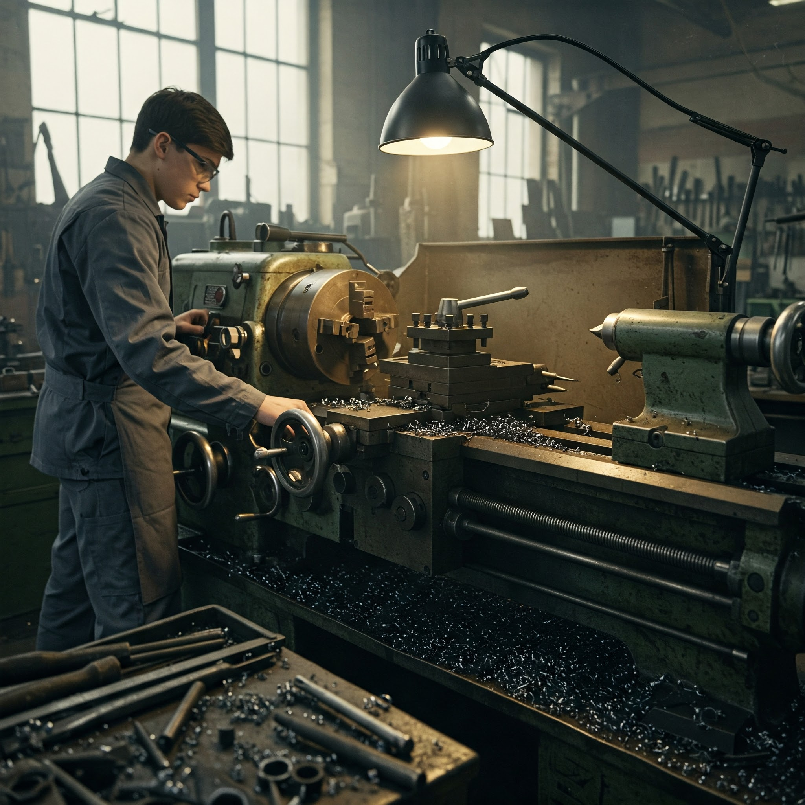

エネルギー機械コースの紹介
大阪公立大学工業高等専門学校のエネルギー機械コースについて紹介していきます。
このコースでは主に機械の構造やエネルギーについてを学習できます。
実習では旋盤やフライス盤、ボール盤などを使い、
材料を加工してエンジンなどを製作しています。
授業では製図の基礎や4力学、CADなどの機械を製作する上で基礎となる学問を学んでいます。

こんな人におすすめ
- 車や船、飛行機などの乗り物が好き
- 工場の生産ラインに興味がある
- レゴで機械を作るのが好きな人
- 時計仕掛けのものが好きな人
- 力学
熱力学、流体力学、材料力学、機械力学を学ぶことができる。これらは機械を設計する基礎であり、大学へ編入するときはこれらのテストを受ける必要がある。
- CAD、製図
機械を設計または、設計図を見る際、役に立つ知識である。本校ではAUTODESKの会社のCADを無料で使えるため、会社に入る前にたくさんいじることができる。
- 実習
本校では設計のほかに実際に旋盤やフライス盤、ボール盤で鉄やアルミ、真鍮などを加工する。これによって、実際に加工する技術や加工がどのように行われるかが具体的に想像できるため設計がやりやすくなる。
- そのほかにも高校の範囲の学習や大学で習う数学なども学ぶことができる。
就ける仕事
エネルギー機械コースはほかのコースよりも幅広い分野の企業につくことができる。
ここに過去の就職先がある。ただ、まだエネルギー機械コースの卒業者はいなく、代わりに機械システムコースを見ていただけるとよいだろう。
下記のようなことをする企業に入社することができる。
- 生産ラインの設計
- 乗り物の設計
- 発電施設の設計
- 精密機器の設計